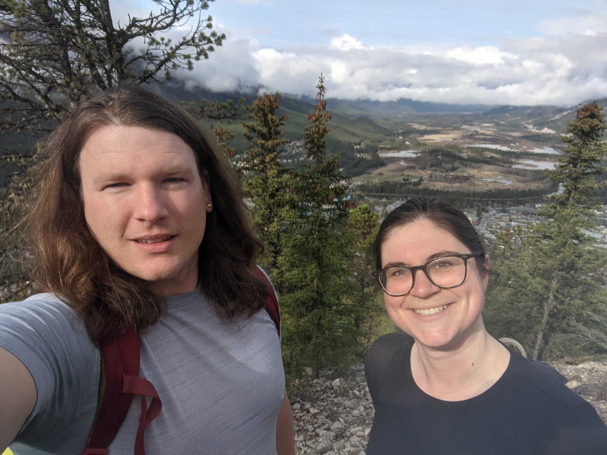

Outreach and News
2023
May
June and I presented at the CGU Annual meeting which was held in Banff this year.  
2022
December
A recent talk I gave during the UBC IRES Seminar Series on ‘Wetlands in a changing world: processes, feedbacks, and the climate benefits of wetlands’
November
Learn more about our recently funded work looking into the role of wetlands as nature-based climate solutions. Excited to work with this great team of researchers! 
Honoured and thrilled to be named CRC in Eco-Meteorology! This is really a group accomplishment that reflects my amazing team (past and present) and all the wonderful and talented colleagues and mentors I’ve had the opportunity to worth with.
September
Thanks @Let’s talk science for featuring our work in your career profiles! See the accompanying interview here.
Marion’s paper was featured in EOS:

2021
June
Coverage of our 2021 Global Change Biology Paper:
2019
August
The UBC Geography department highlighting our 2019 BAMS paper:
An AmeriFlux blog post highlighting our FLUXNET-CH4 work:

June
A blog post I wrote describing life as a new faculty member:
2018 and Earlier
June (2016)
Coverage of our work on wetland restoration in the Sacramento-San Joaquin Delta:
October (2016)
An interview I did as part of STEM week at Los Altos High School in Los Altos, California: